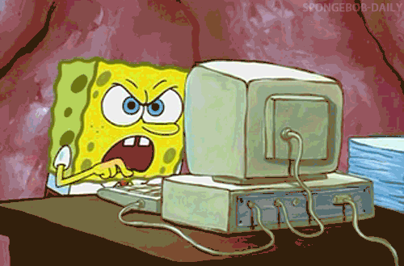
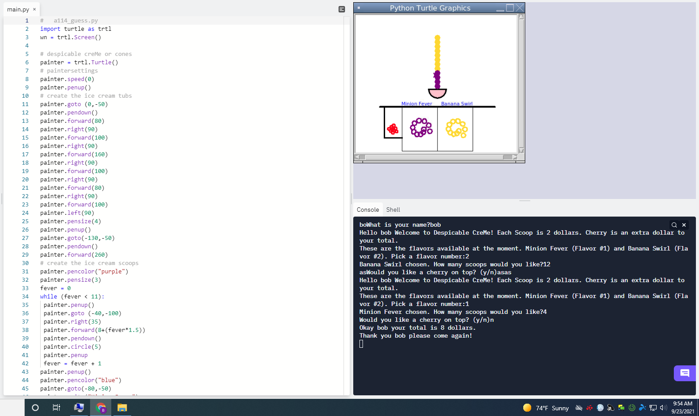
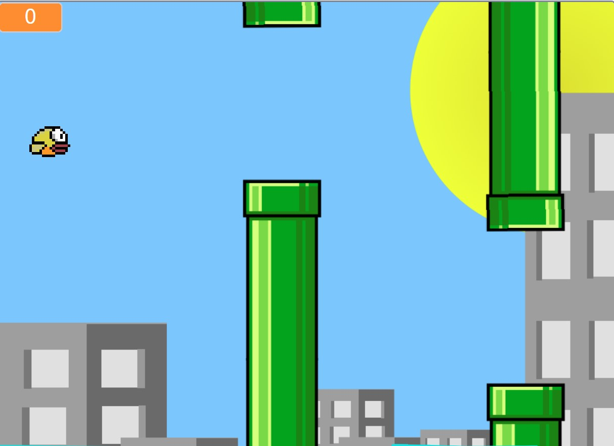
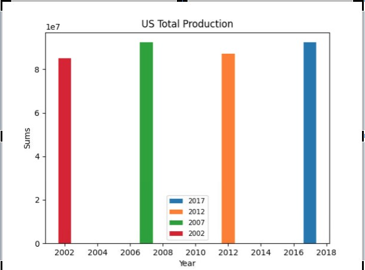
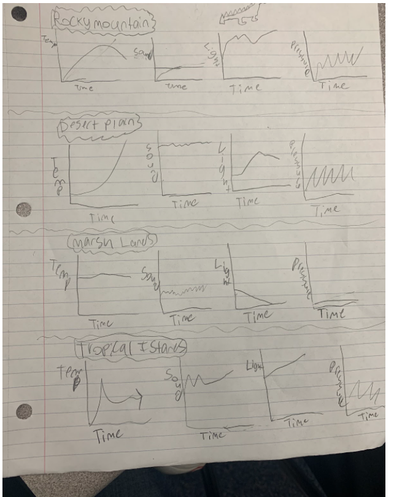
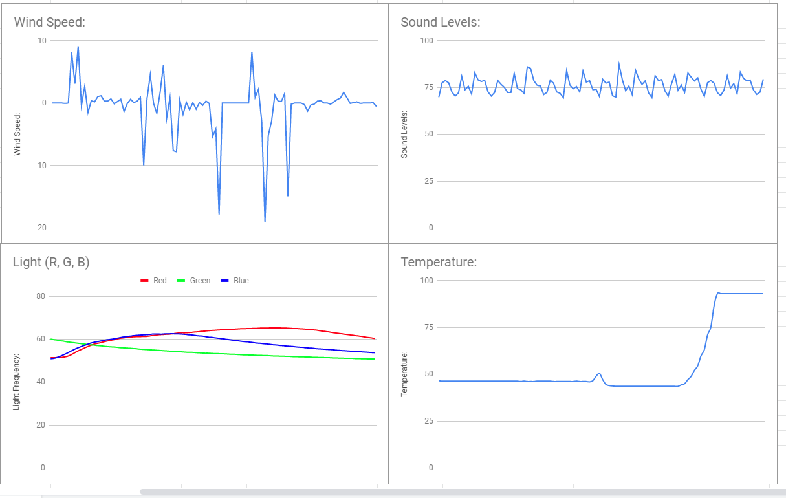
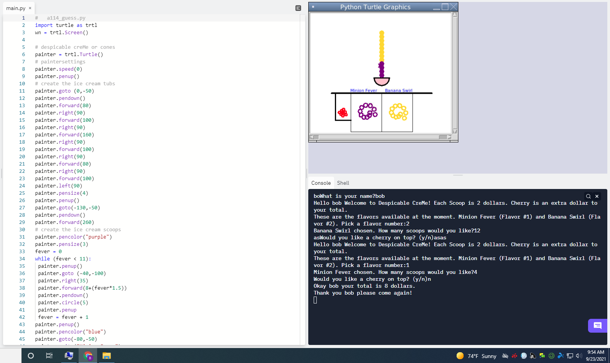

This is my Portfolio Page!
 1.1.9 pltw project
This is our first project from PLTW Lesson 1.1.9. The ice cream stand is on the bottom of the screen including images of the 2 different flavors and a drawing of cherries on the side. It tells the user the 2 scoops we have available (Minion Fever and Banana Swirl) and that each scoop is 2 dollars and a cherry will cost an extra dollar. The program asks the user for their name, what flavor they want (flavor 1 or 2),
how many scoops, and whether they want a cherry or not. If they user chooses a flavor other than #1 or 2, the program will continue to run until they pick correctly. They can add as many scoops as they want and no matter how high the last scoop is, a cherry will be added on top if they would like. Finally, the program calculates the total of the ice cream based on their scoops and additional cherry.

1.2.5 pltw project
This is our secound project from pltw 1.2.5 we made a project where a minion went and ate a banana and we used the WASD keys to conrol if they went up down left or right and we would have the score increase by ten every time they ate a banana. the goal was to get to the score of a 100 before our timer ran out. as you ate the minion ended up going faster along with the timer

Second day scratch project.

we made a flappy bird game where we had three different game modes. they went faster then faster then faster. thats because we made 3 different games mode and we made it on scratch
PLTW 3.2.4 project

we had to graph data about honey into a bar graph and look at the different places and see what the differences were
PLTW 3.1.6 project


we decided that the rover is recording data in the rocky mountains because the temperatures inflate and deflate very quickly and they have very low wind speed.
Using App Inventor to make app game Duck Hunter.
Interactive Fiction Rags to Riches.
Black Jack game written in Python.
Modified bits in pictures.
Use data files to create graphs.
Using netlogo do remix of illusions.
Interactive Fiction Rags to Riches.
